バックプロパゲーションに代表されるようなニューラルネットの教師付き学習 (supervised learning) は、ネットワークの目標とすべき出力パターンが 与えられることを前提としている。これに対し、出力の目標パターンは 与えられず、出力の良し悪しを示すスカラ値のみが与えられる場合に、 それを最大化する出力を学習する枠組みは 強化学習 (reinforcement learning) [2] とよばれる。
そのスカラ値 (報酬：reward) が一連の出力系列と環境の結果として、 未知の遅れの後に与えられる場合、結果が得られるまでに行った 様々な出力や通過した状態のうち、どれがその結果に影響を与えたのかを 推定する必要がある。考えられる方法は、各状態に対する評価を 経験を基に学習しておき、各時点で次の状態での評価が 最大になるような出力を選ぶというものである。
状態 , 出力
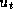
における報酬を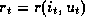
とすると、 状態における評価値 (value function)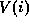
は、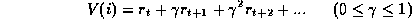
と定義される。これより、
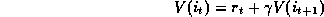
学習の過程で評価値を記憶させる際の規準は、この両辺の差
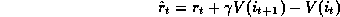
を 0 になるようにすることである。この
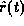
は、TD誤差 (temporal difference error) と呼ばれ、これに基づく学習法を TD学習(TD learning) [3]という。システムの状態変化や報酬の法則性が既知あるいは予測可能である場合は、 その時点での報酬と次の状態の評価値の和が最大となるものを 選択すればよい。 しかしシステムの状態変化の規則が未知の場合は、1ステップ後の評価値が 分からない。この場合は、状態における出力の有用度 (utility function)
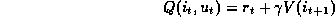
を経験に基づいて記憶しておくことで、最も大きい有用度を与える出力を 選べばよい。この有用度関数 (Q-function) の学習は
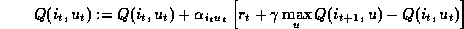
という形で行われる (Q-learning)。ここで
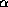
は学習率であり、 簡単に学習率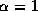
とすると、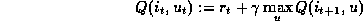
と書ける。
TD学習や Q-learning といった強化学習は、 移動ロボットの制御 [4]や 脳のモデル化 [5]に応用が試みられているように、 現在注目されている学習アルゴリズムである。
![[i18n checked]](i18n-ok.gif) Q-learning により学習を行う Tic-Tac-Toe プログラム
Q-learning により学習を行う Tic-Tac-Toe プログラム